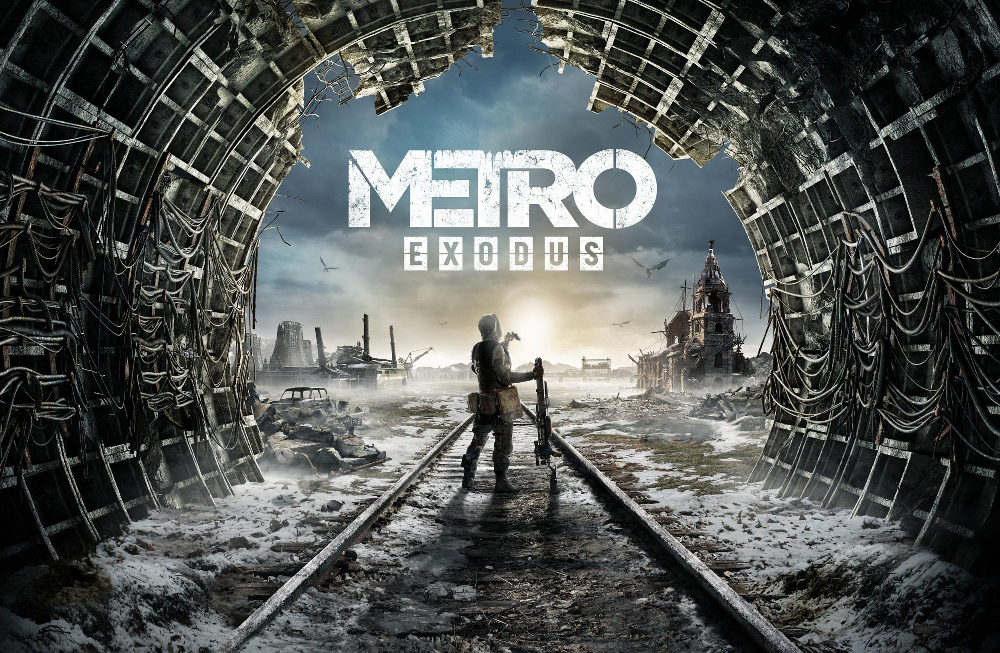

Project
Metro Exodus
Third installment in Metro series bringing players outside of the ruined moscow

Main menu
It started with a request to create a menu that was built in the separate environment, like the menus we had in previous Metro games. We started with a concept of a train cabin, but I wanted to telegraph the journey theme of the game in the menu as well, so I’ve created a prototype of the cabin in different environments and pitched it to Creative Leads. They confirmed it and it grew up into four seasons for the menu environment that change throughout the game. I also added a lot of dynamic elements, that change with each environment to show some props that we found through our journey and state of Anna’s health.
Technically it was a cabin with camera attached that was teleported to the correct environment depending on the current save file. I’ve created all the scenes on one level as rooms with correct backgrounds.


Yamantau
This level was quite different to the rest of the game that used open world approach. Yamantau presented Cannibals as a unique enemy archetype and needed more classical approach with "shoot your way through and save the princess" dynamic.
I was responsible for the full production of the level shown on the video. Starting from blockout and encounter setup finishing with environment art, scripting all level events, unique mechanics and features and a boss fight.
By the narrative cannibals were ex-prisoners mixed with russian goverment, so I decided to create an atmosphere of strict hierarchy and constant fear that drives their insanity. This level contains a lot of easter eggs from that culture to support the atmosphere.
I really wanted to have interesting behavior for them and we needed it for "cheap" in terms of production. I’ve played a lot of games to catch the vibe of more chaotic and savage-like combat, but the biggest reference that I’ve used was original Rage from ID Software. Enemies there were jumping of the walls and used level geometry heavily in their movement to hide that they have only one goal – to reach the player and make a hit with a melee weapon. We captured some animations and created the prototype in the fresh location that was a connective tissue between barracks and kitchen – the freezer where they stored the bodies of their victims.
When the initial graybox and iteration of the gameplay were approved, I’ve started to create the atmosphere of the location, filling it with details. On the kitchen Players can find body parts and household assets that they stole from incoming caravans. Freezer got a separate cold gamma and cold steam particles to block the vision a bit. Armory hid some collectables and all the weapons that cannibals used. Barracks were separated to fulfil the narrative about cannibals’ origin – they were prisoners. I’ve read a lot about the soviet prisons and their habits and tried to recreate it in the level. So, it was divided into separate rooms with the respect of hierarchy. The “boss” had his own luxury, while lowest goons were sleeping on a floor closer to the toilet etc.
The structure of the level with divided chunks and engine tools for optimization let me to create this super detailed environment that contains a lot of references and easter eggs.
Aside from this I did the boss battle with another unique archetype – heavy machine gunner. I’ve decided to create a unique mechanic that was presented earlier in the level – player could shoot pipes to create a pressured steam burst, that killed regular enemies and made a critical hit to the boss.

Novosibirsk
Novosibirsk is the biggest linear level in the game and internally it was separated in three parts divided between Bohdan Gontar, Oleksii Panchenko and me. My part of level already had a blockout ready and my task was to fill it with art, create needed atmosphere with scripted events and set dressing and lead Players to the game ending.
While previous parts of the level were filled with narrative and encounters, the ending part was more about emotions – fear of loss and survival. I’ve decided to use Artyom’s wife – Anna as a main element for the fear of loss, because she got deadly sick before, and we came to Novosibirsk in search of medicine. I used her as a hallucination from a radiation exposure frequently and tried to remind Players what is our ultimate goal here and how it changed during the game and suddenly became more personal.
Novosibirsk was unique to Metro because of its own vibe – untouched apocalypse. By the story the Moscow was nuked, and Novosibirsk was bombed with dirty bomb, which led to absence of destruction throughout the city. I studied Fukushima and Chernobyl to create this unique atmosphere of abandoned city and tried to preserve it throughout Player’s journey.
The only encounters that were in this part of the level aside from constant fight with time and radiation is the return of Librarians from Metro 2033. I needed to provide Players with room and create the understanding of the main rule to remain silent without any hint, voice line or note.
Every bit of my work created that buildup for the ending that we needed, and I feel grateful to take part in this story.
Two Colonels
Right after we finished the work on patches for the game, we started the development of the first DLC that continued the story of Novosibirsk and covered the events that happened before Artyom and Miller get there. We were introducing completely new character – Colonel Hlebnikov.
With initial concept done on paper and flow set, we decided to divide the locations by designers as usual. I chose the beginning of the story, where we were introduced to a new character and our new weapon – flamethrower.
I wanted to make the flamethrower feel as a heavy and deadly weapon, that impacts mobility of the character, but at the same time has an impact on environment. I made player much slower, not so agile and set every door on the level to be opened either by push of the character’s body or bashed by foot.
Players had a goal to clean the slime that built up in the sewers and we made special assets that reacted to the flamethrower, so players needed to burn through them constantly. It created some challenge for the lightning of the level, because of the burning environment, especially after we were left with black burned-out gunk. But by accident I found out, that I can put torchlights on walls, and they will react to flamethrower and light up. That was a cool exploration of how even non-systemic mechanics can work together. After this I populated them on level and cheated a bit by enlarging their trigger compared to a regular torchlight, so they will be activated by flames in almost guaranteed way.
Another big part of the level were worms, that were upgraded compared to a main game. We worked closely in collaboration with AI designer – Mikhail Stupnikov, to create “cheap”, but cool enemy that will terrorize Players in these 20 minutes of playtime.
Marketing screenshots
Made in-engine for Gamescom and press kit purposes.